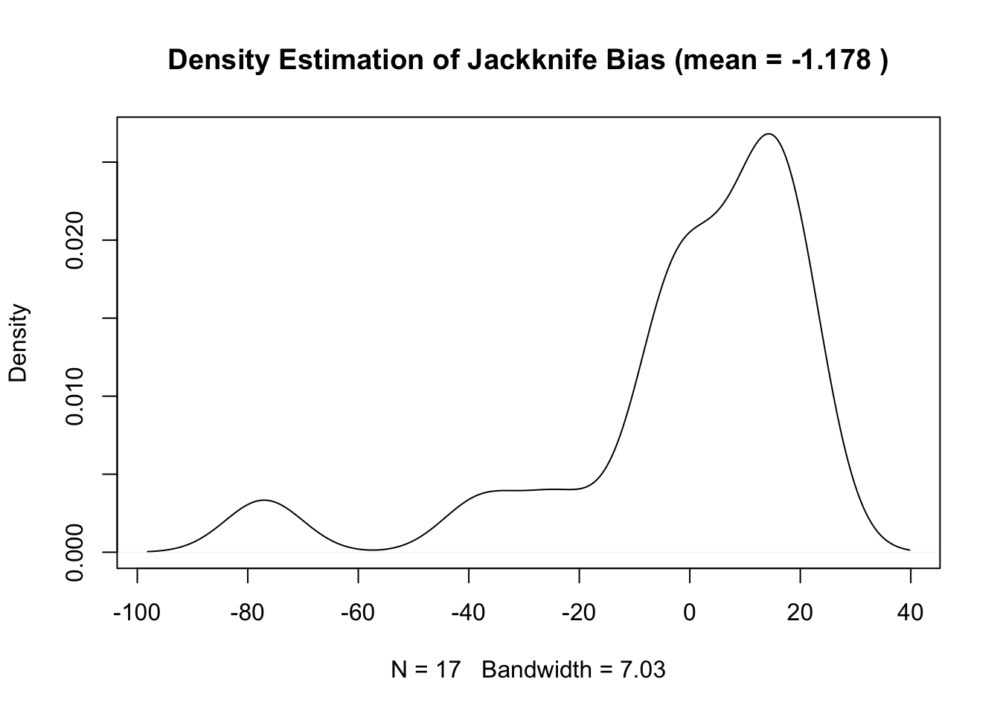
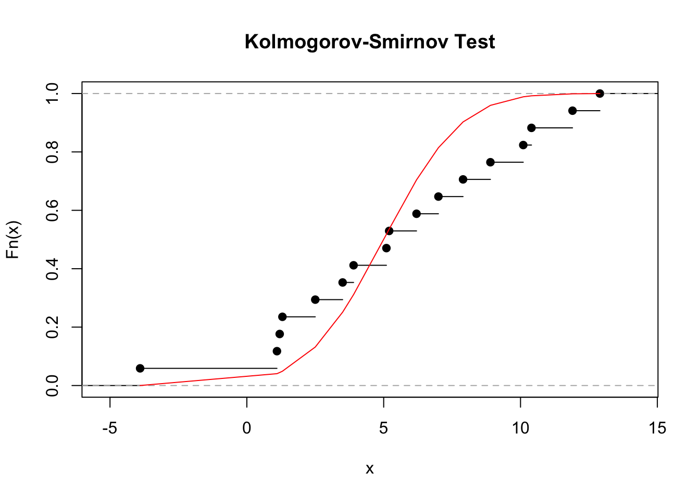
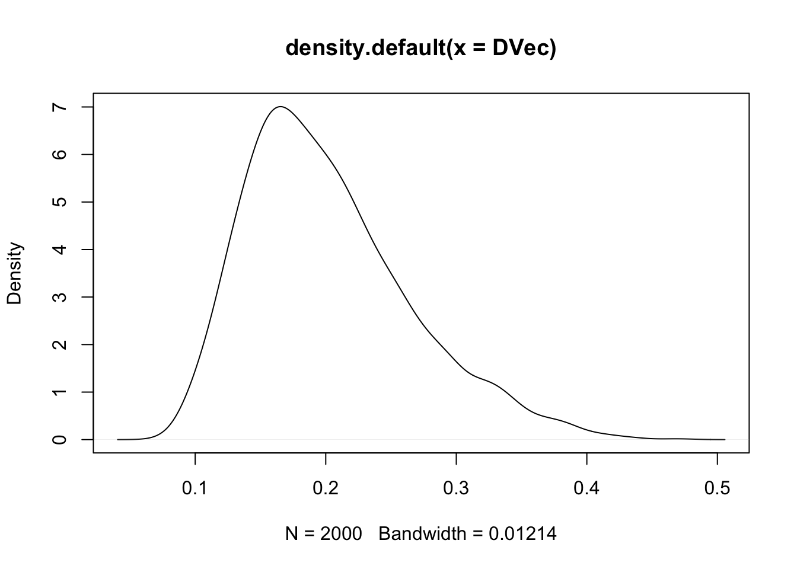

Computational Stats Deliverable 2
António Coelho, Gonçalo Arsénio, Sara Vigário, Tiago dos Santos
2018-11-08
1 Problem 1
Consider the following sample:
c(7.0,3.5,11.9,8.9,10.1,1.2,1.1,7.9,12.9,1.3,5.2,5.1,3.9,2.5,10.4,6.2,-3.9)1.1 1 a)
Assume that the given sample originated from a random variable with a normal distribution whose parameter \(\sigma^2\) is unknown. Use the sample to determine the maximum-likelihood estimator of the parameter \(\sigma^2\).
Maximum normal distribution Likelihood estimation.
Assuming that our sample follows a normal distribution as said on the exercise question, we can say that the probability density function follows this format \[ f_X(x_j)=(2. \pi. \sigma_0^2).e^{-\frac{1}{2}.\frac{(xj-\mu)^2}{\sigma_0^2}} \]
And to optain the maximum likelihood estimation, we need to partially derivate the likelihood in order to the two parameters, \(\mu\) and \(\sigma^2\), and discover the zeros.
\[ L(\mu,\sigma^2,x_1,...,x_n)=\prod_{j=1}^n f_X(x_j;\mu,\sigma^2) \]
\[ =\prod_{j=1}^n(2\pi\sigma^2)^{-1/2}.e^{-\frac{1}{2}.\frac{(xj-\mu)^2}{\sigma^2}} \]
\[ =(2\pi\sigma^2)^{-n/2}.e^{-\frac{1}{2\sigma^2}\sum_{j=1}^{n}(xj-\mu)^2} \] Likelihood function: \[ l(\mu,\sigma^2;x_1,...,x_n)=-\frac{n}{2}ln(2\pi)-\frac{n}{2}ln(\sigma^2)-\frac{1}{2\sigma^2}\sum_{j=1}^n(x_j-\mu)^2 \] Derivates equals to zero \[ \frac{\partial}{\partial \mu}l(\mu,\sigma^2;x_1,...,x_n)=0 \]
\[ \frac{\partial}{\partial \mu}l(\mu,\sigma^2;x_1,...,x_n)=\frac{\partial}{\partial \mu}\bigg(-\frac{n}{2}ln(2\pi)-\frac{n}{2}ln(\sigma^2)-\frac{1}{2\sigma^2}\sum_{j=1}^n(x_j-\mu)^2\bigg)=\frac{1}{\sigma^2}(\sum_{j=1}^nx_j-n\mu) \]
\[ \frac{1}{\sigma^2}(\sum_{j=1}^nx_j-n\mu)=0 \equiv\bigg(\sum_{j=1}^nx_j-n\mu\bigg)=0 \] Then: \[ \hat{\mu}=\frac{1}{n}\bigg(\sum_{j=1}^nx_j\bigg) \]
\[ \frac{\partial}{\partial \sigma^2}l(\mu,\sigma^2;x_1,...,x_n)=0 \] \[ \frac{\partial}{\partial \sigma^2}l(\mu,\sigma^2;x_1,...,x_n)=\frac{\partial}{\partial \mu}\bigg(-\frac{n}{2}ln(2\pi)-\frac{n}{2}ln(\sigma^2)-\frac{1}{2\sigma^2}\sum_{j=1}^n(x_j-\mu)^2)\bigg)=\frac{1}{2\sigma^2}\bigg[\frac{1}{\sigma^2}\sum_{j=1}^{n}(x_j-\mu)^2-n\bigg] \] \[ \frac{1}{2\sigma^2}\bigg[\frac{1}{\sigma^2}\sum_{j=1}^{n}(x_j-\mu)^2-n\bigg]=0\equiv\frac{1}{\sigma^2}\sum_{j=1}^{n}(x_j-\mu)^2-n=0 \] Then: \[ \widehat{\sigma^2}=\frac{1}{n}\sum_{j=1}^{n}(x_j-\mu)^2 \]
sample<-c(7.0,3.5,11.9,8.9,10.1,1.2,1.1,7.9,12.9,1.3,5.2,5.1,3.9,2.5,10.4,6.2,-3.9)
norm.maximLikelihoodEst.var <- function(sample){
n <- length(sample)
sample.mean <- mean(sample)
sum((sample - sample.mean)^2)/n
}
norm.maximLikelihoodEst.var(sample)## [1] 18.849411.2 1 b)
Determine the Jackknife bias and variance of the estimator obtained in the item (a), and discuss the quality of the estimator.
We want to estimate the bias and variability of the estimator, \(\theta=t(F)\). Since a good estimator not sensible to the sample is often of interest to know it faces minor pertubations in \(F\). We can define:
\[ L_t(y;F)=\lim_{\epsilon \rightarrow 0} \frac{t[(1-\epsilon)F+\epsilon H_y]-t(F)}{\epsilon} \] \[ H_y= \left\{ \begin{array}{ll} 1, u \leq y \\ 0, u \geq y \end{array} \right.\tag{2.0} \]
as the influence fuction of \(t\) at \(F\).
Using \((2.0)\) with the empirical function we get the empirical influence function:
\[ I(y)=L_t(y;\hat F)\tag{2.1} \] Applying an extension of Taylor’s Theorem to \(t(\hat F)\):
\[t(\hat F) \simeq t(F)+\frac{1}{n}\sum_{j=1}^n{I_j}\tag{2.2}\] So:
\[\theta-\hat{\theta}=-\frac{1}{n} \sum_{j=1}^n{I_j}\tag{2.3}\]
If we take \(\epsilon = - \frac{1}{n-1}\) we get a distribution with no weight on the point \(x_j\) and weight \(\frac{1}{n-1}\) on the rest of the sample, \(\hat{F_{-j}}\). In practice this is having a sample of size \(n-1\) by omitting \(x_j\) from the original sample.
So, the jackknife aproximation to the empirical influence value \(I_j\) is:
\[I_{jack;j}=(n-1)[t(\hat F)-t(\hat F_{-j})]=(n-1)(\theta-{\hat\theta_{-j}})\]
Consenquently:
\[b_{jack}=- \frac{1}{n}\sum_{j=1}^n{I_{jack;j}}\tag{2.1}\] \[Var_{jack}=\frac{1}{n(n-1)}(\sum_{j=1}^n{I_{jack;j}^2-nb_{jack}^2)}\tag{2.2}\]
sample<-c(7.0,3.5,11.9,8.9,10.1,1.2,1.1,7.9,12.9,1.3,5.2,5.1,3.9,2.5,10.4,6.2,-3.9)
n <- length(sample)
sample.mean <- mean(sample)
ljack <- function(idx, sample, n){
(n-1)*(norm.maximLikelihoodEst.var(sample) - norm.maximLikelihoodEst.var(sample[-idx]))
}
bias.jackknife <- -mean(sapply(1:n, ljack, sample, n))
bias.jackknife## [1] -1.178088ljack.bias.distribution <- sapply(1:n, ljack, sample, n )
variance.jackknife <- 1/(n*(n-1))*sum(sapply(1:n,function(idx,sample,n){
ljack(idx,sample,n)^2 - n*(bias.jackknife^2)
},sample,n))
variance.jackknife## [1] 35.37843plot(
density(-ljack.bias.distribution)
, main=paste0("Density Estimation of Jackknife Bias (mean = ",round(bias.jackknife,3)," )")
)
1.3 1 c)
Consider the null hypothesis \(H_0\): The sample was generated from a random variable with a normal distribution with parameters \((\mu, \sigma^2)\) = \((5,5)\). Use the test statistic’s empirical distribution function to estimate the Kolmogorov-Smirnov test statistic’s p-value. Explain why the test statistic is adequate considering the type of null hypothesis we are trying to test.
Hypothesis testing whose hypothesis are:
\[H_0:X\sim \mathcal{N}(5,5) \\ H_1:X\not\sim \mathcal{N}(5,5)\tag{1.0}\]
Since we dont know the probability distribution function of the test statistic, \(T(X)=D\), we will use the empirical distribution function under the null hypothesis, \(H_0\), \(\hat F(x)_{H_0}\),
\[\hat F(x)_{H_0}= \frac{\#\{i:x_i \leq x\}}{n} \tag{1.1}\]
with \(x_i\) being one of \(n\) observations of the sample
To do this, we need to use the Monte Carlo method.
So, we generate \(m\) samples of the random variable, \(X\) under \(H_0\), \(X\sim \mathcal{N}(5,5)\), and, for each sample, compute the test statistic:
\[x_1: x_1^1, ...,x_n^1 \rightarrow t_1=T(x^1)\\.\\.\\.\\ x_m: x_1^m, ...,x_n^m \rightarrow t_m=T(x^m)\tag{1.2}\]
To compare the samples with the reference probability distribution, \(\mathcal{N}(5,5)\), we will use the Kolmogorov-Smirnov statistic.
In short, this statistic determines the degree of similarity between two given probability distributions through distance. This distance, D, is the the largest distance between the two given cumulative distribution functions.
Being \(F(x)\) the cumulative distribution function of the known distribution and \(y(j)\) the discontinuity points of \(\hat F(x)_{H_0}\):
\[D=\max_x|\hat F(x)_{H_0}-F(x)|\] \[=\max_{x}\{\max_x\{\hat F(x)_{H_0}-F(x)\},\max_x\{\hat F(x)-F(x)_{H_0}\} \}\] \[=\max_{j=1,...,n}\{\frac{j}{n}-F(y(j)),F(y(j))-\frac{j-1}{n} \}\tag{1.3}\]
Figure 1.1: Graph showing the distances between continuous cdf and discrete empirical cdf (Ross, page 222, 4th edition)
This is well ilustrated in figure 1.1, where since both functions are monotonically increasing, a maximum distance D will only occur in the discontinuity points of \(\hat F(x)_{H_0}\) or \(y(j)\).
As previously stated, D is applied to every Monte Carlo sample. So, appling \((1.3)\) to \((1.1)\) we get:
\[ T(x^1)=D_1=\max_{j=1,...,n}\{\frac{j}{n}-F(y_1(j)),F(y_1(j))-\frac{j-1}{n}\} \] \[...\] \[ T(x^2)=D_2=\max_{j=1,...,n}\{\frac{j}{n}-F(y_2(j)),F(y_2(j))-\frac{j-1}{n}\} \tag{1.4} \] and to the original sample:
\[T(x)=d=\max_{j=1,...,n}\{\frac{j}{n}-F(y(j)),F(y(j))-\frac{j-1}{n}\}\tag{1.5}\]
Finally, the \(\hat{p-value}\) is estimated:
\[\hat{p-value}=P(D\geq d|H_0) \\ = \frac{\#\{D_k:D_k \geq d\}}{n} \tag{1.6}\]
KS_statDist<-function(sample,mean,sd)
{
sample<-sort(sample)
n<-length(sample)
DVecA<-rep(0, n)
DVecB<-rep(0, n)
for(j in c(1:n))
{
DVecA[j]<-(j/n)-pnorm(sample[j],mean,sd)
DVecB[j]<-pnorm(sample[j],mean,sd)-((j-1)/n)
}
DVecAA <- sapply(1:n,function(idx){(j/n)-pnorm(sample[j],mean,sd)})
DVecBB <- sapply(1:n,function(idx){pnorm(sample[j],mean,sd)-((j-1)/n)})
return(max(c(DVecA,DVecB)))
}
#Kolmogorov-Smirnov test
sample.sort <- sort(sample,decreasing = F)
d<-KS_statDist(sample.sort,5,sqrt(5))
#plot
EmpCDF<-ecdf(sample.sort)
NormCDF<-pnorm(sample.sort,5,sqrt(5))
plot(EmpCDF,main="Kolmogorov-Smirnov Test")
lines(sample.sort,NormCDF,col="red")
MCsampleNum<-2000
m<-length(sample.sort)
DVec<-rep(0, m)
pValueNumerator<-0
for (k in c(1:MCsampleNum))
{
#D calculation of the generated MC samples
DVec[k]<-KS_statDist(rnorm(m,5,sqrt(5)),5,sqrt(5))
if(DVec[k]>=d)
pValueNumerator<-pValueNumerator+1
}
DVec.df <- data.frame(
pts = DVec
)
library(ggplot2)
p <- ggplot2::ggplot(DVec.df, aes(x=pts)) +
geom_density()
plot(density(DVec))
#p-value calculation
pValue<-(pValueNumerator+1)/(MCsampleNum+1)
pValue## [1] 0.1889055